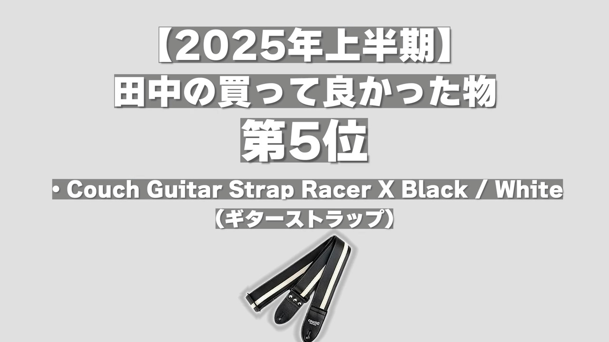

いつもありがとうございます。
編集工程とフォント設定の早見表
再生リスト例: https://www.youtube.com/playlist?list=PLymY1_fvlfzMz4d8Vx00lKzZzvvDV3QIR
日曜日
PDFで編集者に共有。
実際の台本:
月曜日
スーツ着用パートの動画・音声を確保。
火曜日
火曜日
水曜日
木曜日
木曜日〜
木曜日午前12時までに、テロップが入れられるように粗編をしたpremiaproのプロジェクトファイルをお送りします。
【指示】
※1: 下の写真のようになっている場合
間を補う為の映像なので変更を加えないでください。
※2: タイムラインに黒い部分が表示されている場合
”映像がまだ用意できていない部分”なので、台本通りにテロップを作成してください。
※3: 場面転換点
台本の目次に沿って同じ文章と画像を挿入してください。文字を区切る位置は台本中の「/」を参考にしてください。
日曜日
毎週日曜日午前12時までにテロップ入れが完了したpremia proのプロジェクトファイルを納品してください。
再生リスト例: https://www.youtube.com/playlist?list=PLymY1_fvlfzMZPQ9ePMSkw49LD69_UfGD
PDFで編集者に共有。
実際の台本:
木曜日午前12時までに、テロップが入れられるように粗編をしたpremiaproのプロジェクトファイルをお送りします。
【指示】
※1: 下の写真のようになっている場合
間を補う為の映像なので変更を加えないでください。
※2: タイムラインに黒い部分が表示されている場合
”映像がまだ用意できていない部分”なので、台本通りにテロップを作成してください。
※3: 場面転換点
台本の目次に沿って同じ文章と画像を挿入してください。文字を区切る位置は台本中の「/」を参考にしてください。
毎週日曜日午前12時までにテロップ入れが完了したpremia proのプロジェクトファイルを納品してください。
再生リスト例: https://www.youtube.com/playlist?list=PLymY1_fvlfzMsywncLnDTOPXVoizhfgzd
PDFで編集者に共有。
実際の台本:
木曜午前納品依頼 → 日曜午前までに受領
木曜日午前12時までに、テロップが入れられるように粗編をしたpremiaproのプロジェクトファイルをお送りします。
【指示】
※1: 下の写真のようになっている場合
間を補う為の映像なので変更を加えないでください。
※2: タイムラインに黒い部分が表示されている場合
”映像がまだ用意できていない部分”なので、台本通りにテロップを作成してください。
※3: 場面転換点
台本の目次に沿って同じ文章と画像を挿入してください。文字を区切る位置は台本中の「/」を参考にしてください。
毎週日曜日午前12時までにテロップ入れが完了したpremia proのプロジェクトファイルを納品してください。
⭕️例:
❌例:
基本的な会話テロップの設定です。
スケールや位置はその都度調整します。
補足情報や、台本にない「本音」を演出し、親近感やキャラクターの印象を操作したい時に使用します。
台本にはないが、本人も呆れているような「セルフツッコミ」のニュアンスで使用します。
自分（田中）が喋っている時は原則これです。
自分が喋っている時や左上に「・」で始まる補足テロップを配置する時に、特にキャッチーに見せたいと思った時に使用します。
画面が暗転した時や、ズームアップした時、威厳を持たせたい時や挨拶で使用します。
Bパターンの動画で自分意外の人が喋っている時（特に大人の方）、またはAパターンBパターンで「他の人がこう言ってた」的な演出をする際、当該人物のセリフを起こす時はこのフォントを使用します。
A・Cパターンの動画には必ず最後に登場する定型パートです。